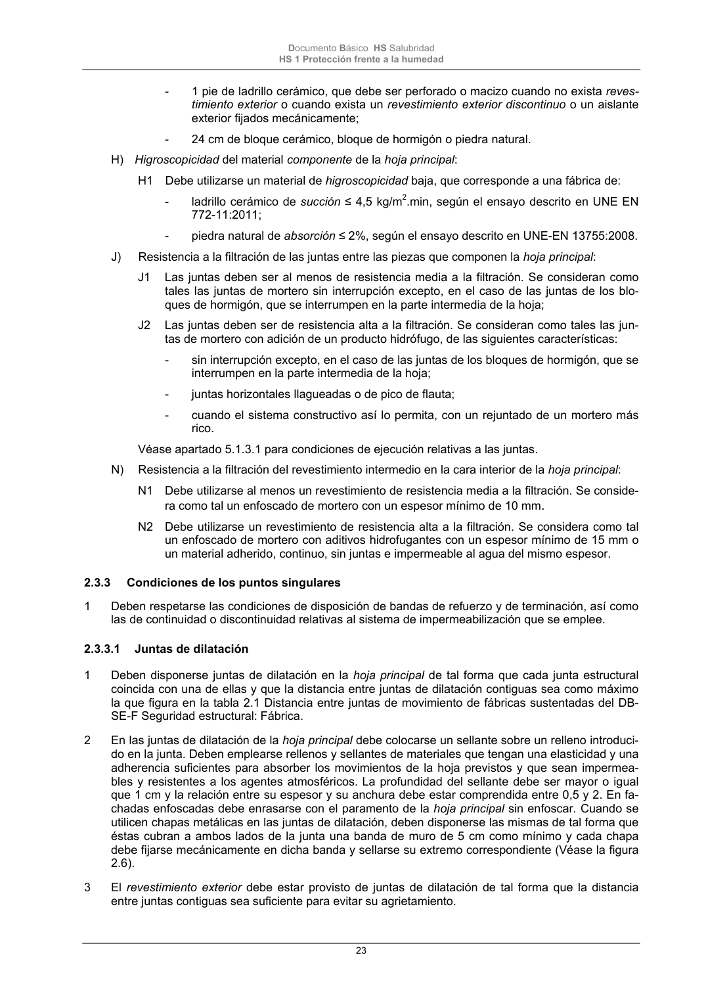

DB-HS Salubridad · edición 2022-06-14 · capa oficial
Documento DB-HS-oficial · SHA-256 del PDF 68df3caacc95f71aee2ec1ba7b2c65ae66155c21e3a8785521b8fdd4fd640d3b
Página física 23 de 184.
Copia fiel del PDF fuente · Fuente oficial
Ficha de la disposición en la fuente oficial
Formato: Texto de la página (Markdown)
Documento Básico HS Salubridad HS 1 Protección frente a la humedad 23 - 1 pie de ladrillo cerámico, que debe ser perforado o macizo cuando no exista reves- timiento exterior o cuando exista un revestimiento exterior discontinuo o un aislante exterior fijados mecánicamente; - 24 cm de bloque cerámico, bloque de hormigón o piedra natural. H) Higroscopicidad del material componente de la hoja principal: H1 Debe utilizarse un material de higroscopicidad baja, que corresponde a una fábrica de: - ladrillo cerámico de succión ≤ 4,5 kg/m2.min, según el ensayo descrito en UNE EN 772-11:2011; - piedra natural de absorción ≤ 2%, según el ensayo descrito en UNE-EN 13755:2008. J) Resistencia a la filtración de las juntas entre las piezas que componen la hoja principal: J1 Las juntas deben ser al menos de resistencia media a la filtración. Se consideran como tales las juntas de mortero sin interrupción excepto, en el caso de las juntas de los blo- ques de hormigón, que se interrumpen en la parte intermedia de la hoja; J2 Las juntas deben ser de resistencia alta a la filtración. Se consideran como tales las jun- tas de mortero con adición de un producto hidrófugo, de las siguientes características: - sin interrupción excepto, en el caso de las juntas de los bloques de hormigón, que se interrumpen en la parte intermedia de la hoja; - juntas horizontales llagueadas o de pico de flauta; - cuando el sistema constructivo así lo permita, con un rejuntado de un mortero más rico. Véase apartado 5.1.3.1 para condiciones de ejecución relativas a las juntas. N) Resistencia a la filtración del revestimiento intermedio en la cara interior de la hoja principal: N1 Debe utilizarse al menos un revestimiento de resistencia media a la filtración. Se conside- ra como tal un enfoscado de mortero con un espesor mínimo de 10 mm. N2 Debe utilizarse un revestimiento de resistencia alta a la filtración. Se considera como tal un enfoscado de mortero con aditivos hidrofugantes con un espesor mínimo de 15 mm o un material adherido, continuo, sin juntas e impermeable al agua del mismo espesor. 2.3.3 Condiciones de los puntos singulares 1 Deben respetarse las condiciones de disposición de bandas de refuerzo y de terminación, así como las de continuidad o discontinuidad relativas al sistema de impermeabilización que se emplee. 2.3.3.1 Juntas de dilatación 1 Deben disponerse juntas de dilatación en la hoja principal de tal forma que cada junta estructural coincida con una de ellas y que la distancia entre juntas de dilatación contiguas sea como máximo la que figura en la tabla 2.1 Distancia entre juntas de movimiento de fábricas sustentadas del DB- SE-F Seguridad estructural: Fábrica. 2 En las juntas de dilatación de la hoja principal debe colocarse un sellante sobre un relleno introduci- do en la junta. Deben emplearse rellenos y sellantes de materiales que tengan una elasticidad y una adherencia suficientes para absorber los movimientos de la hoja previstos y que sean impermea- bles y resistentes a los agentes atmosféricos. La profundidad del sellante debe ser mayor o igual que 1 cm y la relación entre su espesor y su anchura debe estar comprendida entre 0,5 y 2. En fa- chadas enfoscadas debe enrasarse con el paramento de la hoja principal sin enfoscar. Cuando se utilicen chapas metálicas en las juntas de dilatación, deben disponerse las mismas de tal forma que éstas cubran a ambos lados de la junta una banda de muro de 5 cm como mínimo y cada chapa debe fijarse mecánicamente en dicha banda y sellarse su extremo correspondiente (Véase la figura 2.6). 3 El revestimiento exterior debe estar provisto de juntas de dilatación de tal forma que la distancia entre juntas contiguas sea suficiente para evitar su agrietamiento.
